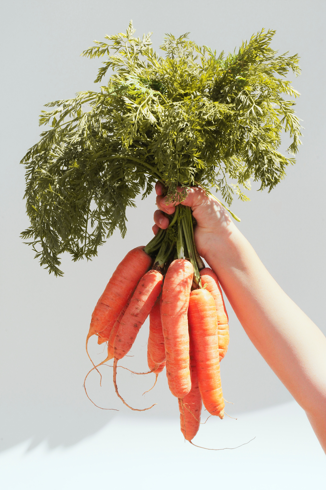
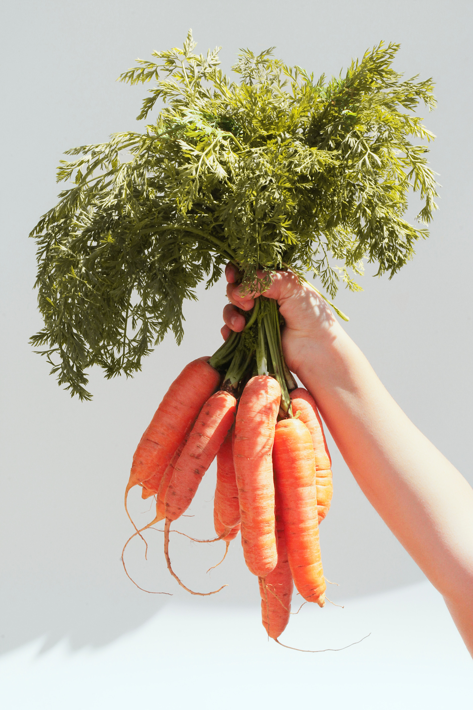

In the heart of bustling cities lurks a transformative movement that brings the bounty of nature into our daily lives: urban gardens. Beyond the walls and asphalt sidewalks, these green havens offer a host of benefits that transcend the act of planting. Urban gardening is not just about growing plants in a concrete jungle; it is a transformative movement that redefines our relationship with nature and our cities. Let's deepen our understanding of the countless benefits of urban gardening and discover how it reshapes our urban landscapes and enriches our lives. Here are a few reasons why urban gardening can bring numerous benefits to our lives:
 
